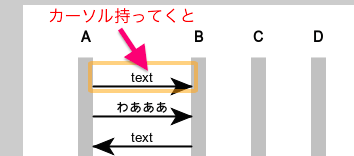
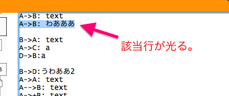

WSDっていうシーケンス図を文章から作ってくれるサイトがあって便利だ
概要
WebSequenceDiagrams
https://www.websequencediagrams.com
ていう、文字列をシーケンス図にしてくれるサイトがあって便利を感じた。
紹介
みためこんなの。Styleがデフォルトだと何故か「ナプキンに書いたような奴」になってる。
A->Bとか書くと図が出来る。
逆にB->Aを書けば図も逆が書かれる。
突然Zとか書いても新しい軸として追加してくれる。位置とかスペースのマージも。
通信:内容 みたいに内容も書ける。日本語もいける。
altもいける。
作った図は画像としてDLできる。
文字から作られるのでコピペが容易。

左列にサンプルが有り、押すとひな形がテキストに現れて、グラフ化される。
いろんな種類の通信表記に対応。途中から有料。
間違って書くと、errorを出してくれる。どこがエラーかもでる。
図の方にカーソルを持っていくと、該当行がひかる。という芸コマっぷり。

良さ
シーケンス図、要素を追加したりするのが面倒だったり、人によってフォーマット差が激しかったりする。
そのへんを、平易な文字列で記述してなんとかする、っていうのが凄く良い。
あと文字列なので、バージョン管理できる。
良い。